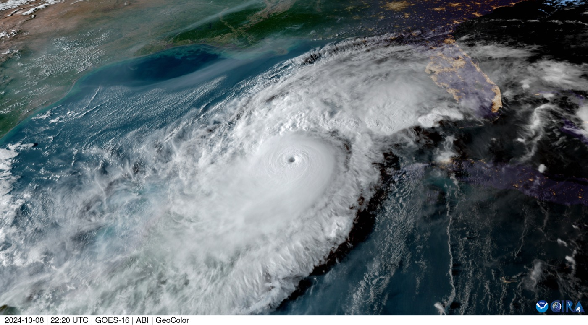

Hurricane & Emergency
Phone Numbers
Before a Storm
Know Your ZoneLook up your evacuation zone by address.kyz.pinellascounty.org (opens in a new tab)
Find a ShelterGeneral, pet-friendly, and special needs. Check which shelters are open.pinellas.gov (opens in a new tab)
Make a PlanThe county hurricane guide, in English, Spanish, and Vietnamese.pinellas.gov (opens in a new tab)
Get AlertsFree Alert Pinellas texts, calls, and emails. This site has no live alerts.pinellas.gov (opens in a new tab)

More Emergency Resources
Links open in a new tab.
Sources
Links and numbers were checked Nov. 9, 2026.